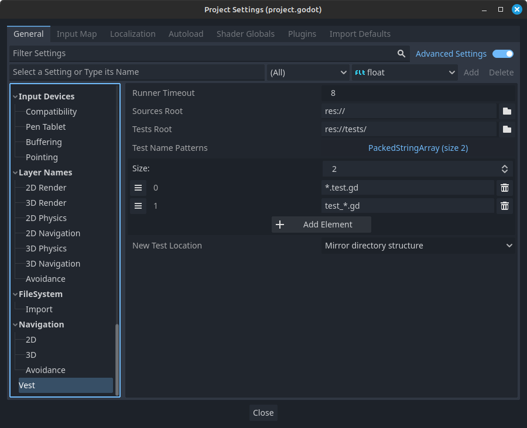

Project Settings
Vest has some aspects that can be configured. These are stored in the project settings:

Note
All of vest's settings are marked as advanced, meaning the Advanced Settings toggle must be on for them to show up.
Runner Timeout
Defines the timeout for running tests, in seconds - if the test process takes longer than this setting, it will be abandoned. Useful to avoid waiting indefinitely for tests that fail to terminate.
Sources Root
The root directory for non-test code. Vest will assume this is the directory where all game-related scripts are stored, either directly or in subdirectories.
Among others, this setting is used to figure out the source script when jumping between test and implementation using Editor commands.
Tests Root
The root directory for test code. Vest consider this directory as the default for new tests.
This setting is used for Editor commands.
Test Name Patterns
Vest will use these patterns to map test scripts to their original scripts. The list is in order of preference - the first item is considered the default, while the others are fallbacks.
For example, given a script called patterns.gd, this is how each pattern maps
the filename:
*.test.gd⇒patterns.test.gdtest_*.gd⇒test_patterns.gd
The mappings are bidirectional. Using the Go to test command, when trying to
navigate from patterns.gd, vest will look for patterns.test.gd and
test_patterns.gd. And when trying to navigate from test_patterns.gd, vest
will assume that the test belongs to patterns.gd and try to navigate there.
New Test Location
When using the Create test command, vest will use this setting to determine in which directory to suggest creating the test.
The examples below will assume the following settings:
- Sources root:
res://src/ - Test root:
res://tests/
- Mirror directory structure
- The suggested path will mirror the same directory structure as under the Sources Root, relative to Tests Root:
res://src/feature/script.gd⇒res://tests/feature/script.test.gd- Next to source
- Vest will suggest to create the test right next to the source:
res://src/feature/script.gd⇒res://src/feature/script.test.gd- In tests root
- Vest will suggest to create the test under the test sources root:
res://src/feature/script.gd⇒res://tests/script.test.gd- Note that this option will put all new tests directly under the tests root, without any subdirectories.